Research archive
Visuals
Representative research works and visual artefacts.
Representative works
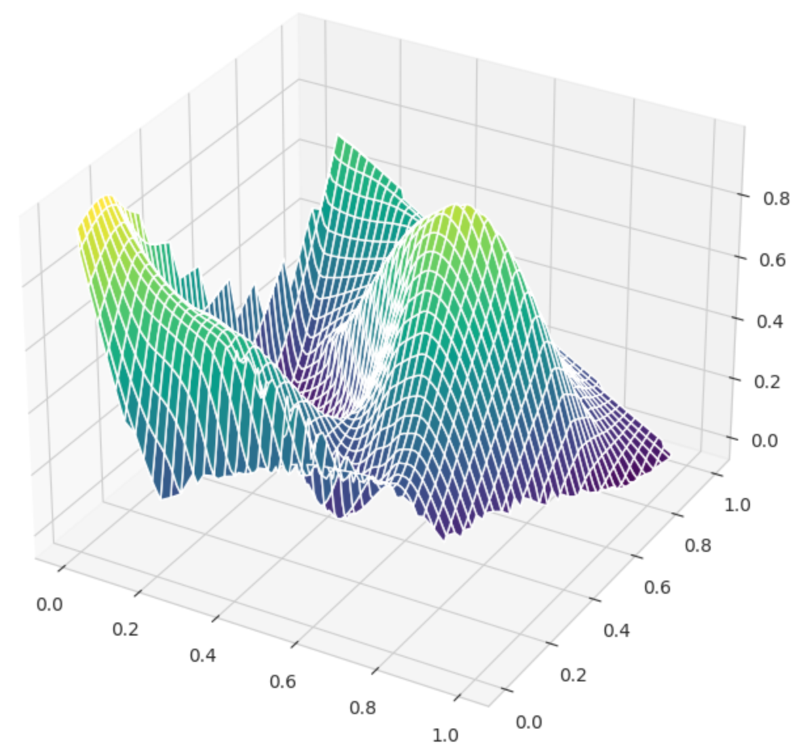
Turning Time into Shapes: A Point-Cloud Framework with Chaotic Signatures for Time Series
Journal of Forecasting (Wiley), 2025In Press ↗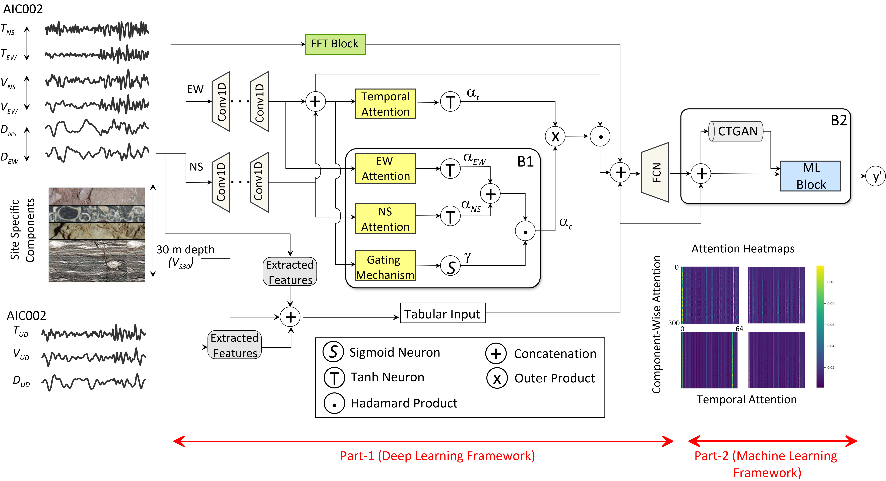
IsoMapGen: Framework for Early Prediction of Peak Ground Acceleration Using Tripartite Feature Extraction and Gated Attention Model
Computers and Geosciences (Elsevier), vol. 196, pp. 1-15, 2025DOI:10.1016/j.cageo.2024.105849 ↗
A Deep Attention Model for Onsite Estimation of Earthquake Epicenter Distance and Magnitude
IEEE Transactions on Geoscience and Remote Sensing, vol. 62, pp. 1-11, 2024DOI:10.1109/TGRS.2024.3459425 ↗Towards Engagement Prediction: A Cross-Modality Dual-Pipeline Approach using Visual and Audio Features
ACM MULTIMEDIA 2024, 28 October - 1 November 2024, Melbourne, AustraliaDOI:10.1145/3664647.3688986 ↗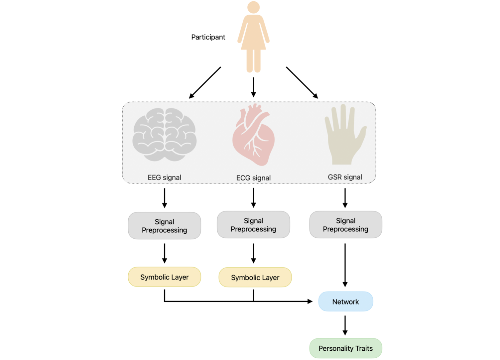
All Signals Point to Personality: A Dual-Pipeline LSTM-Attention and Symbolic Dynamics Framework for Predicting Personality Traits from Bio-Electrical Signals
Biomedical Signal Processing and Control (Elsevier), vol. 96(A), pp. 1-12, 2024DOI:10.1016/j.bspc.2024.106609 ↗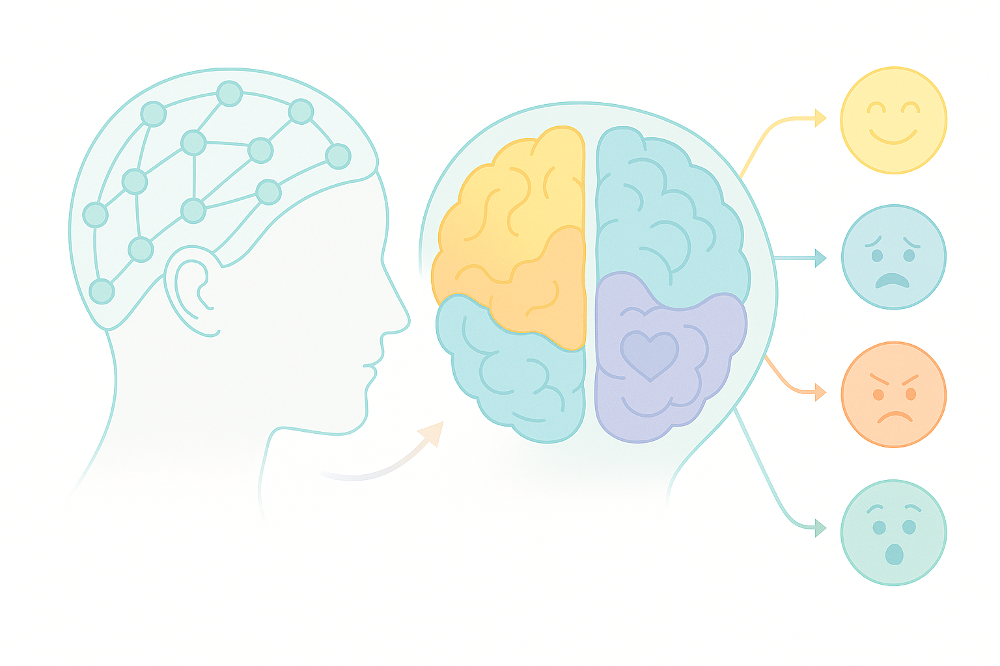
Neuro-Emotional Mapping of Human Emotions via EEG Signals
18th IEEE International Conference on Automatic Face and Gesture Recognition (FG), 27-31 May 2024, Istanbul, TurkeyDOI:10.1109/FG59268.2024.10581941 ↗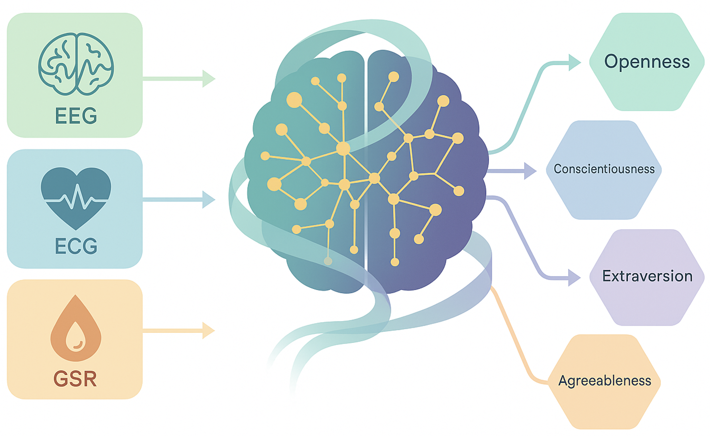
Integrating Physiological Signals with Dynamical Attention Networks for Personality Trait Analysis
International Joint Conference on Neural Networks (IJCNN 2024), 30 June - 5 July 2024, Yokohama, JapanDOI:10.1109/IJCNN60899.2024.10650662 ↗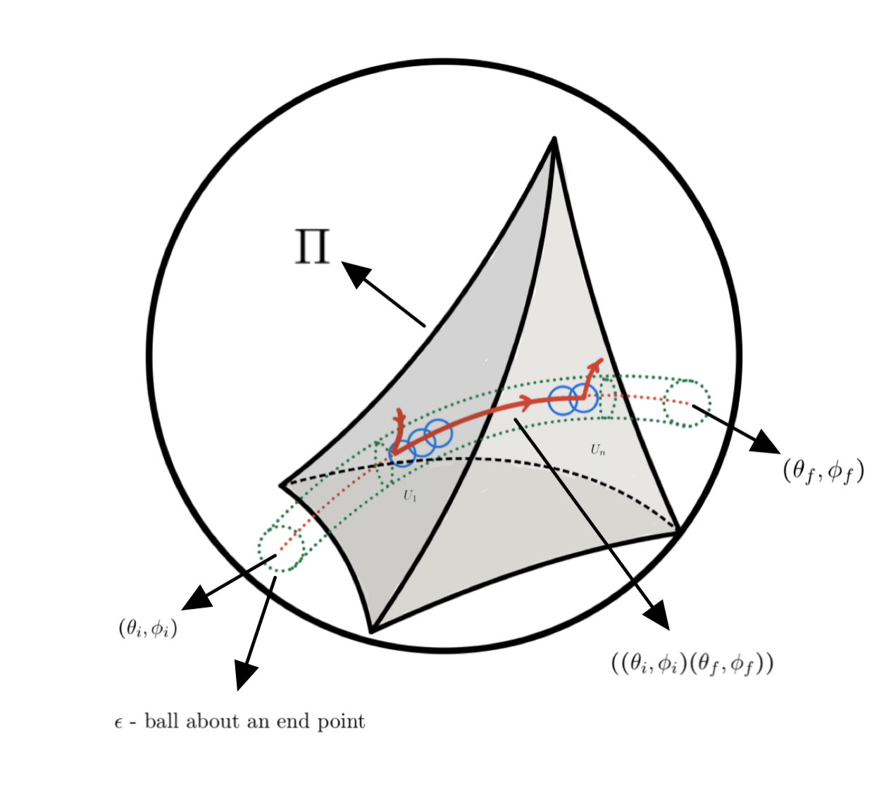
Coding Billiards In Hyperbolic 3-Space
Journal of Dynamical and Control Systems (Springer Nature), vol 30(4), pp. 30-47, 2024DOI:10.1007/s10883-024-09721-0 ↗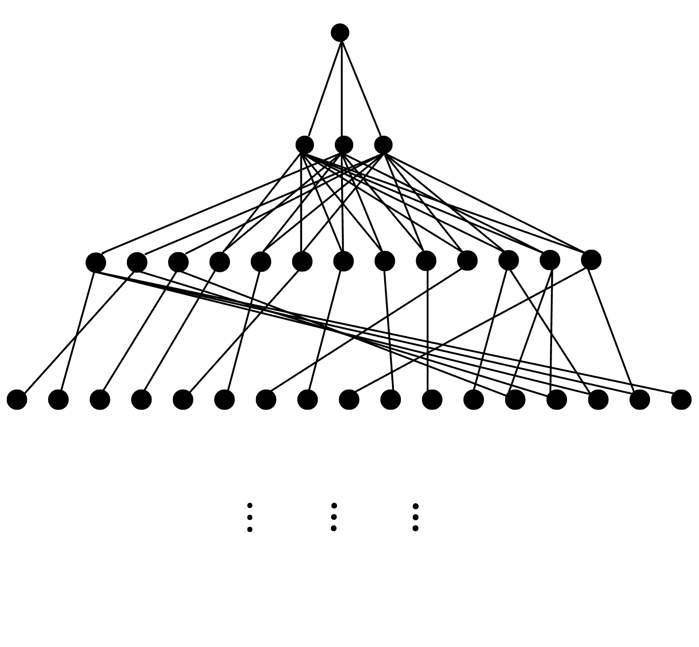
Bratteli-Vershikizability of Polygonal Billiards on the Hyperbolic Plane
Journal of the Australian Mathematical Society (Cambridge University Press), vol 117.1, pp. 85-104, 2024DOI:10.1017/S1446788723000174 ↗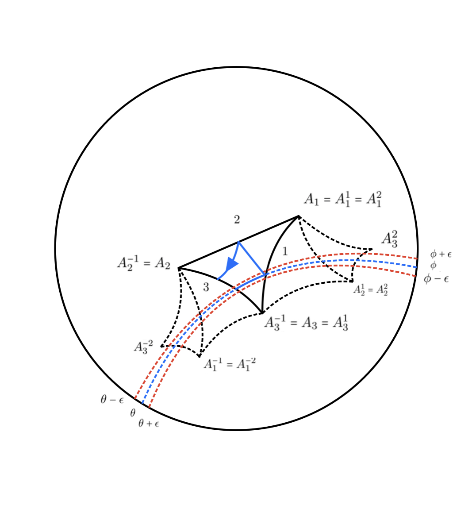
Finiteness in Polygonal Billiards on Hyperbolic Plane
Topological Methods in Nonlinear Analysis (Juliusz Schauder Center for Nonlinear Studies), vol 58(2), pp. 481–520, 2021DOI:10.12775/TMNA.2021.003 ↗
Books
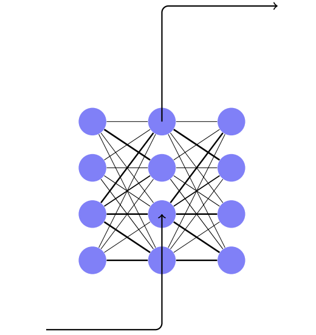
Deep Learning Through the Prism of Tensors
Springer Nature Singapore, 2024, · ISBN: 978-981-97-8018-1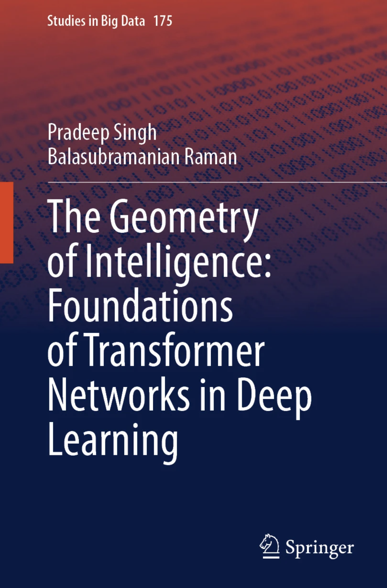
The Geometry of Intelligence: Foundations of Transformer Networks in Deep Learning
Springer Nature Singapore, 2025, · ISBN: 978-981-96-4705-7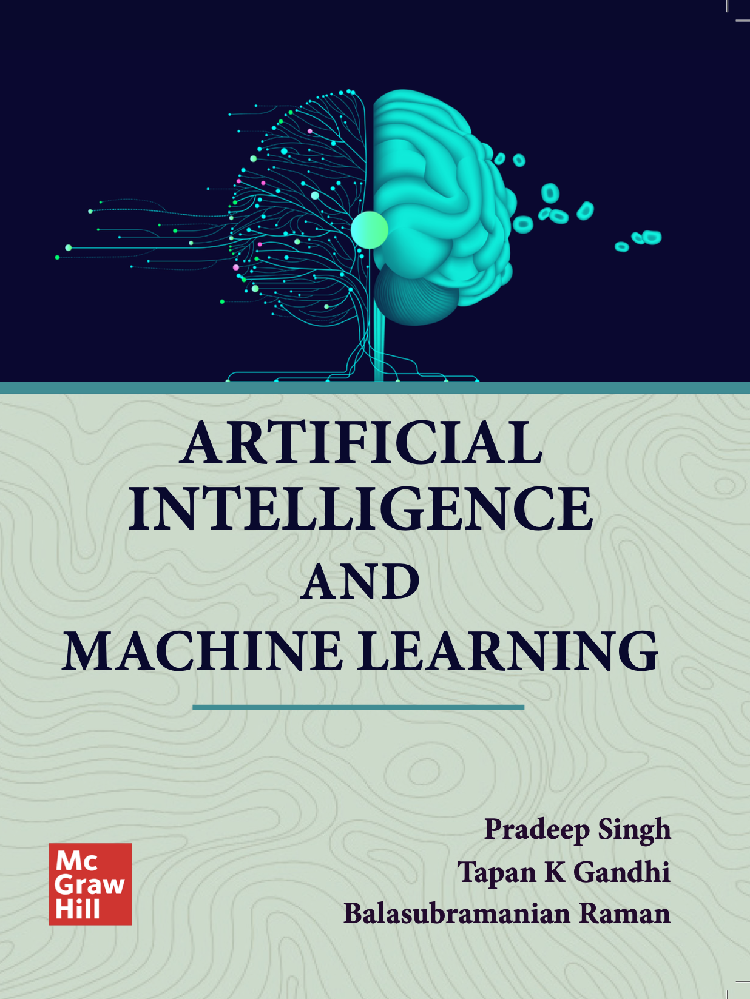
Artificial Intelligence and Machine Learning
McGraw Hill India, 2025, · In PressBits and Bots
Kindle Publishing, 2023, ISBN: 979-886-81-3470-8